Published: 2023-11-13
Original link: https://www.cnphotos.net/academy/show-158.html
■ Interviewee | Zhang Yu
■ Reporter | Zhang Yue
■ Editor | Zhou Yimeng
■ Editor-in-chief | Chen Xiaojun
The cnphotos.net Top Ten Photographer award selects the best photographic work of each year. It encourages and honors photographers who achieve outstanding results in artistic photography. It motivates photographers to create more work. The work should reflect the voice of the new era, show the struggle of the people, lift up the national spirit, and refine noble feeling.
The 2022 (5th) cnphotos.net Top Ten Photographer selection went through several steps. These included a display of selected work, a public vote, a final review by a committee of famous photographers and scholars, and a public notice. The process chose the Top Ten Photographers and the nominees for the year.
To show the classic work and creative process of these photographers, cnphotos.net wants to build a richer space to display and share work. Recently, our reporters and editors will interview the Top Ten Photographers. We will tell the stories behind their work. We will later publish a collection of the Top Ten Photographers.
This issue features an interview with the photographer Zhang Yu.
Editor's note
Preface
Zhang Yu was born in 1996. He is the youngest of this year's cnphotos.net Top Ten Photographers. This humble member of the post-1990 generation should not be underestimated. He is young, but he has worked in the field for a long time and has produced a large body of photography. He is a true professional. Zhang Yu has traveled many times to western China, including Sichuan, Qinghai, Gansu, Xinjiang, and Tibet. He has built up a large collection of landscape and humanistic images. His work uses photography to explore history, society, and memory. It shows the relationship between landscape, daily life, and reality. I asked him what keywords he would use to describe himself. He answered: learning, progress, gratitude, romance.
Zhang Yu grew up in a rich artistic family. His father is a photographer, so he follows in his father's footsteps. He also studied photography formally at school. He learned a wide range of practical photographic skills. Then, during his internship, he kept studying with the photographer Wang Jianjun. Learning brings progress. If you keep learning, you keep making progress, and you keep gaining new things.
The film The Grandmaster has a line that reminds people as they master a craft. It says: there is always someone beyond you, and a mountain beyond the mountain. A boxer must not only look at the road ahead, and forget the stance behind him. Zhang Yu does not get stuck in his own ego. He admires the way his teacher behaves, works, and creates. He understands and is grateful for the strict, demanding expectations of his elders. His belief in deep accumulation before a gentle release makes his path solid.
After graduation, most of his classmates did not work in photography. Photography has always been Zhang Yu's true interest. To make a career of what you love is itself a kind of romance. Landscape and aerial photography are now his main subjects and methods. When he talks about his adventures in uninhabited areas, Zhang Yu is excited. He is open and full of warmth. He keeps traveling widely to experience how big the world is, and to see its beauty.
Zhang Yue
November 16, 2023
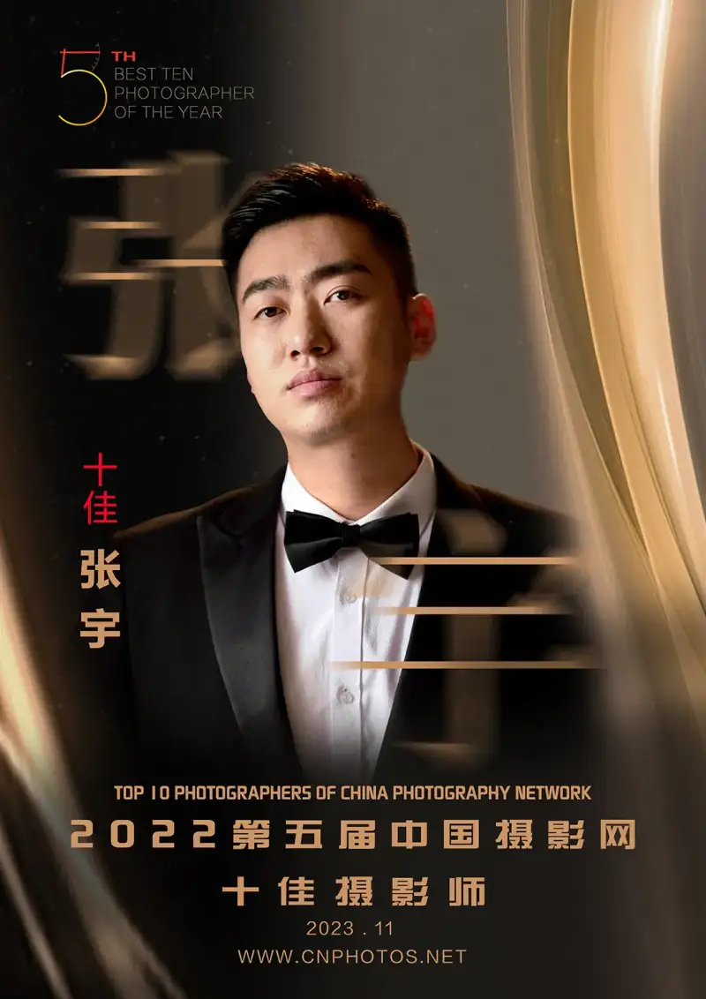
Zhang Yu graduated from the Photography program at Sichuan Communication University. He is a signed photographer of cnphotos.net. He has traveled many times to western China, including western Sichuan, Qinghai, Gansu, Xinjiang, and Tibet. He has built up a large collection of landscape and humanistic images. He has solid experience in image work. He has entered uninhabited areas many times, including Eboliang in Qinghai, Ngari in Tibet, and the Great Sea Road near Hami in Xinjiang.
cnphotos.net reporter Zhang Yue (hereafter Zhang Yue): As I know, your father is also a photographer. First, please tell us about your family and your father's photography.
cnphotos.net Top Ten Photographer Zhang Yu (hereafter Zhang Yu):My family has a strong artistic atmosphere. My father Zhang Tao is the director of our local cultural center. He works professionally in photography. He is a member of the China Photographers Association, a board member of the China Art Photography Society, and president of our local photographers association. He has worked in photography for more than 30 years and has won many awards at the national and provincial level. When I was a child, there were always some mysterious things at home. I remember several large black metal boxes in the corner. Later I learned they were my father's dry boxes for camera gear. They held all kinds of cameras and lenses, big and small. There were also many old photo albums. Stacked together, they were probably higher than the ceiling. Every time we went out, my father took many photos of us. Back then I thought my dad looked really cool and handsome whenever he picked up a camera. I did not understand it then. Later I felt those were the most precious records. I also loved playing with these metal boxes from a young age. My mother used to work in opera. She has a strong, clear voice. Now she teaches opera at a senior university. My dad used to take plenty of silly photos of my mom. For me, I have inherited my father's profession. They strongly support me. They care for my work and are also strict about it.
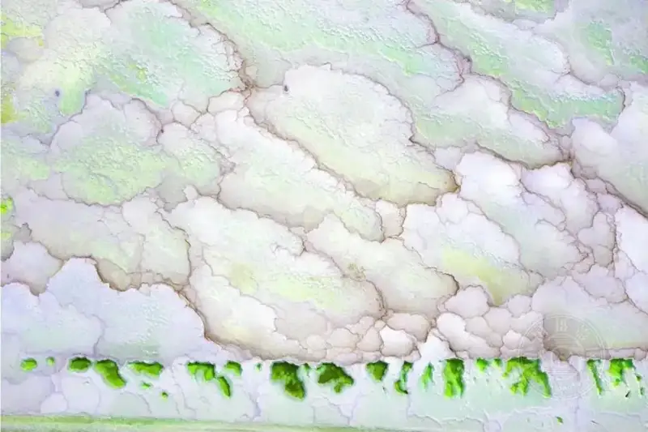
"Abundance"
November 3, 2019, Qinghai
Nature has truly written a natural concerto,
it foreshadows the arrival of the spring.
Zhang Yue: In what year did you graduate from the Photography program at Sichuan Communication University? What kind of photography training did you mainly receive at school?
Zhang Yu:I graduated from Sichuan Communication University in 2018. My time at university had a strong influence on my life. Our school taught photography in two tracks: still photography, and film and television photography. I mainly studied still photography. Every corner of the photography school was a place for students to show their ideas. Every studio and every dorm room was a creator's own world. Maybe it was because I loved photography from childhood. I liked to tinker with all the cameras at home and carry one everywhere. At university I could use more cameras, and this excited me for a long time. Almost every time I went street shooting in the city with classmates, I kept taking photos nonstop. Back then I did not know what was good or bad. I tried every type of image. I took many works that I now look back on and dismiss. I rode almost all ten-plus subway lines in Chengdu. I just loved to wander and could not stay still. During this time my urge to share grew. I often held small photo reviews in the dorm. I also went to photography exhibitions with friends who shared my passion. I really love the city of Chengdu. I love her deeply. She is my second home.
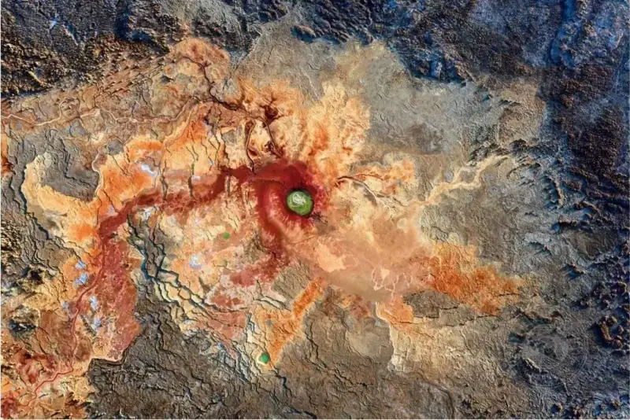
"Eye of the Earth"
November 2, 2019, Qinghai
The Devil's Eye, Aiken Spring,
a place people long to reach on the western land.
Zhang Yue: Between the broad cultivation of overall qualities and the training of photographic craft itself, which do you think mattered more for you at university?
Zhang Yu:Overall, for me personally, it was more about learning and training in photographic craft. For most photography students, before university they know photography only from art-exam textbooks. They know the simple meaning of aperture, shutter, and exposure. They memorize it perfectly, but they have little real shooting practice. I remember our film course in the first year. Back then, my memory of film only went back to childhood trips with my dad, who click-clicked frame after frame. I did not know the principle behind it. Many different techniques, such as landscape, documentary, commercial, and advertising photography, deeply attracted me. Besides classroom teaching, we spent much time privately experimenting with friends. For a while we went to every corner of the school we could imagine. We tried to make the images we wanted. We shot star trails, time-lapses, multiple exposures, and pictures of female classmates. We failed many times, but each time we learned many shooting techniques from each other. It was enough to show off among classmates. We were truly happy every day back then.
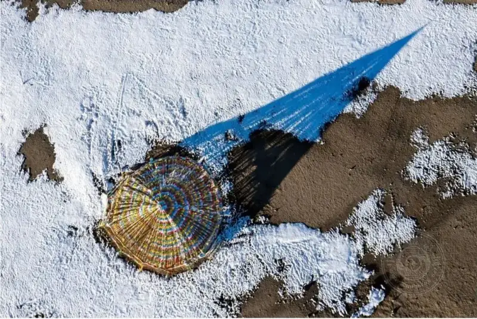
"Cycle of Rebirth"
April 5, 2019, Tibet
Prayer flags before the sacred mountain Kailash,
seen from above they look like the cycle of human rebirth.
Zhang Yue: In what year did you start photographic creation? Your profile says your work shows the relationship between landscape, life, and reality, and explores the interplay of history, society, and memory. Can you give examples of your subjects and the content of your work?
Zhang Yu:Real photographic creation started for me in 2015. The work I did at university always had some limits.
That Mountain, That Scene. The mountain and the scene in my heart are the affection and reverence for nature I have held since I began to study photography. They are also an uncrossable high peak in my inner world today. Contemporary photographers use different ways of thinking and expression, but most landscape work still looks similar. What I look for may be the quiet in my own heart. It may also be a subjective reading of the natural world. I revere the earth. Using the vast western land, I show the vivid spirit of our Chinese Eastern culture through a clear national and independent spirit.
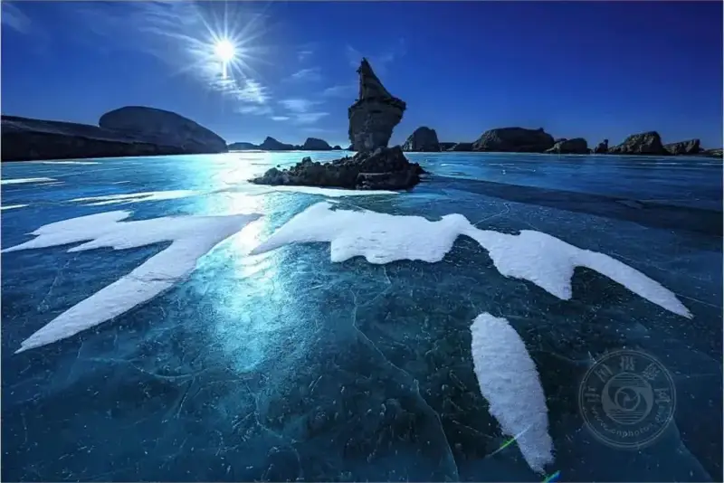
"Rare Yardang"
December 30, 2018, Qinghai
At dusk, after the sunset, the icy yardang landform after snowfall,
looks like an ink painting with Chinese character.
When I talk about my choice of subjects, I must mention one person. I am deeply grateful to my teacher, the famous Chinese landscape photographer Wang Jianjun. If the knowledge of university is a cup of lukewarm water, my time with Teacher Wang was like the ocean. This experience opened a new door in my life. I learned not only photographic knowledge, but more about how to behave and how to work.
In 2015, China Central Television came to film a documentary about Teacher Wang. They chose students from our school to work as assistants. I was lucky to be chosen, and I began a week of army-style life. Why do I call it that? Each day of shooting was planned down to the minute. You had to plan what to do at each time. You had to sit properly and stand properly. This was the first time I felt the strong presence of a photographer. It was not only that I knew he was a great photographer. Mostly, I was struck by his highly recognizable and personal way of being. In the years after, I felt and understood and was grateful more and more. He acts decisively and thinks sharply. He moves fast and still has grace. It completely won me over. I remember the teacher once joked: every shoot, you rise earlier than the rooster, sleep later than the dog, and are as tired as a pig. Back then I wondered how shooting could reach that point. Why? For what? I did not understand. Later I gradually understood one thing. Every shoot is an experience of life. Each time you gain a lot from different angles and levels.
In the years after, under Teacher Wang's influence, I stepped out of my small world. I slowly observed the people, events, objects, and qualities around me. It also let me see the great rivers and mountains of my country. Most of this body of work was shot during this time. Behind each image I can tell a whole story. It is not about explaining the work. It is about the events that happened behind the work. Each event is enough to stay with me for life.
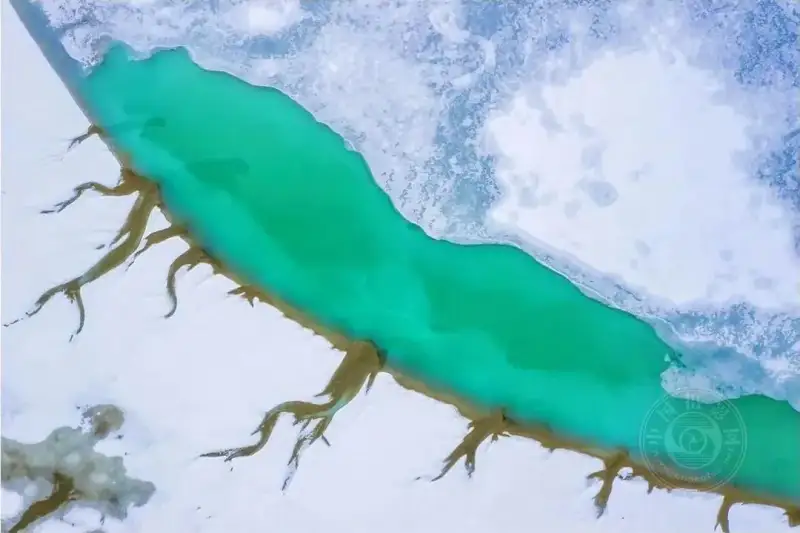
"Severe Winter"
March 27, 2019, Tibet
Winter, a corner of Ranwu Lake at an altitude close to 4,000 meters.
Zhang Yue: You have traveled many times to western China, including Sichuan, Qinghai, Gansu, Xinjiang, and Tibet, and built up many landscape and humanistic images. So is your creation mainly landscape, or mainly humanistic? Between human landscape and natural scenery, which do you think better shows your values?
Zhang Yu:Read ten thousand books and travel ten thousand miles. Both matter for a photographer. For me, those years of creation were mainly landscape. I also shot humanistic work, but back then, maybe because of my own maturity and life experience, I always felt I could not grasp the right point in humanistic images.
Landscape photography has always held a special, important place in the history of Chinese photography. In the late 1970s and early 1980s, it was a major form and type of photography. In the 1990s in particular, Chinese landscape photography reached a peak. After 2000, new forms of artistic expression slowly entered landscape photography. Landscape photography, conceptual photography, and new landscape photography showed strong expressive power. For me, the years I studied with Teacher Wang made me fall deeply in love with landscape photography. I remember the many categories dazzled me as I learned: landscape photography, new landscape photography, topographic photography, new topographic photography, and landscape spectacle photography. At first I shot without thinking, just taking pictures. After I had built up a lot, I got some work that only sat on the surface. If you asked me to explain it, I could not say much. Later I slowly brought in my own feelings and my understanding of the subject. I slowly got images that carried my own values. In short, whether human landscape or natural scenery, those years were a time of enrichment and learning for me. They are a record of my real photographic life and my feeling for each place.
That said, many young photographers today, maybe through their own self-regard or the praise of others, take a few images with strong light and shadow and think they are great. But if you ask them to tell the story or idea behind an image, they often cannot. To me, such images do not stand on their own. They only exist on the surface. I remember a Douyin video. Two photographers waited in an alley. They planned to shoot two female models they had brought. At dusk they suddenly noticed a beam of light on the wall looked beautiful. They paid 100 yuan to ask an old grandmother upstairs to come down and cooperate. The result looked great. Under the setting sun, on an old street about to be demolished, a frail old grandmother walked through a beam of holy light. The video got hundreds of thousands of views. Viewers praised it as truly great, and said this is what a photographer is. My first feeling was this. These so-called master-level photography lessons flood Douyin and Xiaohongshu. Crowds of viewers like them and even pay for courses. The older generation, whose images truly influenced a generation of photographers, have little presence online. To me, this is not a hundred flowers of photography. Some work does not stand. It cannot hold up to looking, or to being questioned. Then again, I have to accept it. The whole environment of photography is like this now.
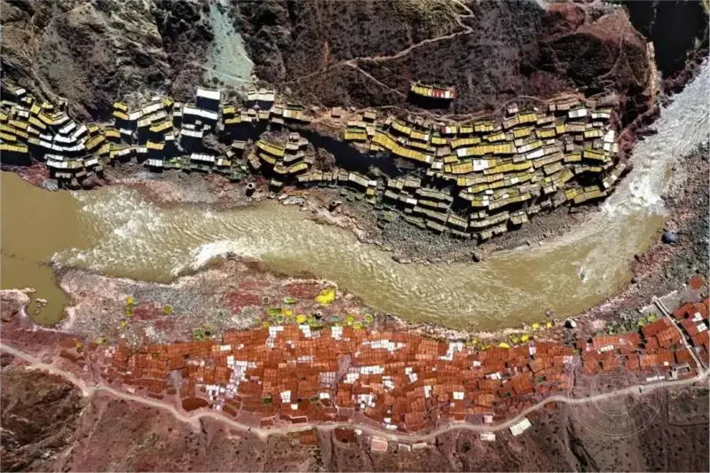
"Life and Living"
March 25, 2019, Tibet
The ancient salt fields at Mangkam Yanjing,
with a history of 1,300 years,
sit on both banks of the Lancang River.
They show the most primitive handmade salt-making life of the ancients.
Zhang Yue: I read that you are a photographer with solid image experience. Does solid refer to photographic technique, to post-processing, or to the ideas? Do you value shooting, post-processing, or the exploration of artistic ideas more?
Zhang Yu:By solid, I think all three points matter. It is like a bowl of hot self-heating rice. With only rice and no water, it cannot heat. With rice and water but no flavor packet, it tastes of nothing. I think the taste matters most. Here, the taste is the idea in the image. There are hundreds of millions of images on the internet now, and behind them tens of thousands of photographers. On the platforms aimed at young photographers, the popular ones are surely not only good-looking. The story behind the image, or that experience, or the feeling the photographer wanted to express at the moment he pressed the shutter, that is the point. For me, I make this the core of each image and each series. I think it comes in stages. I do not think a good image comes by chance. Shooting, post-processing, and exploring art need different times, places, and life experience. They grow slowly through constant learning. I always believe in four words: deep accumulation, gentle release. I do not rush for quick results. Compared with many excellent photographers, I still need to keep growing and learning. To put it plainly, leave aside the photographers who strain to enter every contest. Even the photographers who shoot events today. If your angle is poor, you do not color-grade, and you shoot randomly and without logic at the event while feeling good about yourself, and the client is not satisfied, then it is just self-amusement.
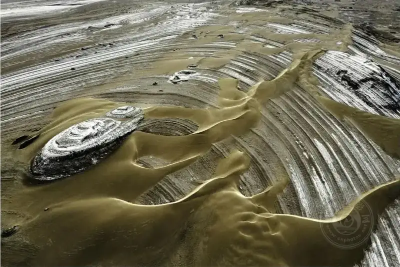
"Golden Land"
November 3, 2019, Qinghai
A corner of the Qinghai Saturn ring,
like an alien surface, full of mystery.
Zhang Yue: You seem to have said that photography is a contest of culture, and you photograph yourself. This makes sense. Good work must rest on deep cultural roots, and it must express your inner world. What kinds of knowledge should a photographer have? How can you express yourself more accurately through images?
Zhang Yu:Each person must live this to understand it slowly. The world you express from your heart is not always accepted by the public. What the public accepts is sometimes not what you want to express. What the public likes may still be rejected by the niche art world. Why do so many artists stand out through personal or even extreme angles? I think it is not only because they have culture. A photographer's knowledge should grow from many angles, but I think rich life experience is the most important. Walk more, see more, and hear the stories of different regions and classes. Art, learning, and experience all shape our understanding of photography. Understanding, plus the right time and scene, often add up to a successful image. Next is formal education. I did not think much of it before, but for young people today, a strong degree is still useful. I am working on this too. Photography is a contest of culture, and you photograph yourself. This saying makes me tell a story I remember.
In 2016, I joined Teacher Wang at a photography exhibition for the first time. I remember it was in Jinchang. We spent the whole morning setting up the show. On the way back to the hotel, the teacher asked me: Xiao Yu, what is culture? This stumped me. My mind raced, and I answered: culture is knowledge. The teacher sighed and shook his head. That was the first time I felt the taste of not being recognized. It felt bad. I felt as if I had wasted university. At lunch, the teacher spoke to me with weight. He said: culture is the self-cultivation rooted in the heart. It is the awareness that needs no reminder. It is the freedom built on restraint. It is the kindness that thinks of others. I was still confused then. After years of learning and practice, I slowly grasped the meaning and what the teacher wanted to tell me. This saying was not original to Teacher Wang, but I remember it for life. Culture is not only knowledge. It can be the study and preparation you do before a photo job, when you learn the local customs and geography of a place in advance. It can be an art story you talk over with friends at an exhibition. It can be a small thing you see, hear, and understand in life. It contains far too much meaning. So many people now think they are cultured, but in truth, they know they are far from enough. Learning has no end. You should not put so many empty titles on yourself early. There is always someone beyond you, and a mountain beyond the mountain.
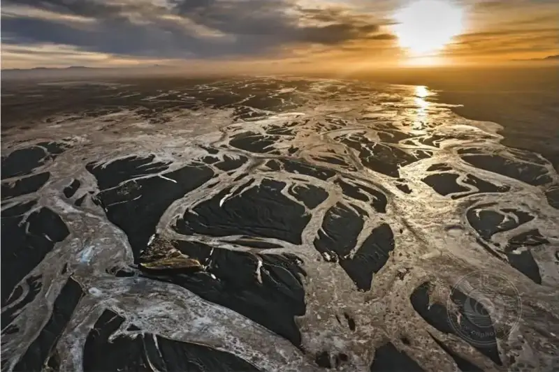
"Red River of the Tibetan Land"
January 31, 2019, Qinghai
The Tuotuo River means Red River in Mongolian,
grand and vast, stretching without end.
Zhang Yue: The China Photography Golden Road Award has six categories: social documentary, natural environment, portrait, culture and art, folk customs, and alternative fashion. Each category gives only one award, and it is hard to win in Chinese photography. In what year, and with what work, did you win this honor?
Zhang Yu:I won the Golden Road Award in 2021, in the fine art category. It was mainly images of western China that I shot in earlier years. It included 15 single color images and one black-and-white series. The other series was a black-and-white set called Into the Great Sea Road. The Great Sea Road was the shortest ancient route between Dunhuang, Hami, and Turpan. It comes from a fragment of the Westzhou Map Classic. It opened and began to be used in the Han dynasty. After the Tang dynasty, official use slowly stopped. The Great Sea Road faded from view and became an old Silk Road route kept only in historical memory. From Dunhuang west through Hami to Turpan, the route is more than 500 kilometers. It is the most legendary part of the Silk Road. In the Great Sea Road you can see ancient castles, post stations, prehistoric human dwelling sites, fossil mountains, and many rare landforms. Walking on the western land of my country, I deeply felt the differences between ethnic cultures and their different beautiful scenes. Into the Great Sea Road, crossing its uninhabited areas, I felt the long history left by the Silk Road, and sensed the extreme beauty of the western land.
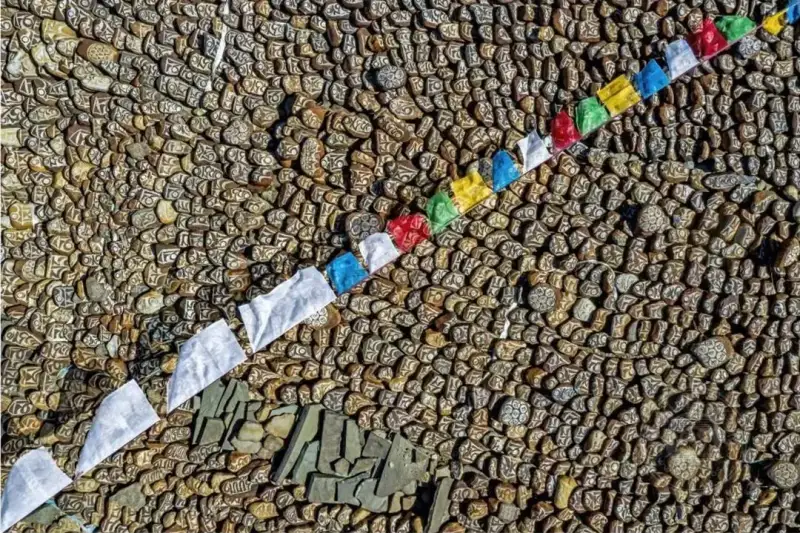
"Compassion"
April 6, 2019, Tibet
A line of prayer flags passes over countless mani stones,
like countless monks praying for the sky.
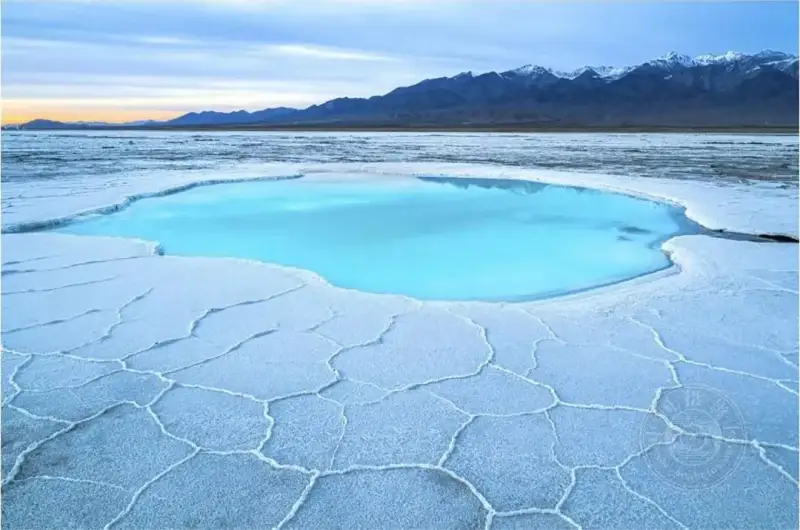
"Cold Leaf"
November 5, 2019, Qinghai
On the saline-alkali land inside the Da Qaidam Emerald Lake,
a moving leaf is clearly printed,
shining together with the earth.
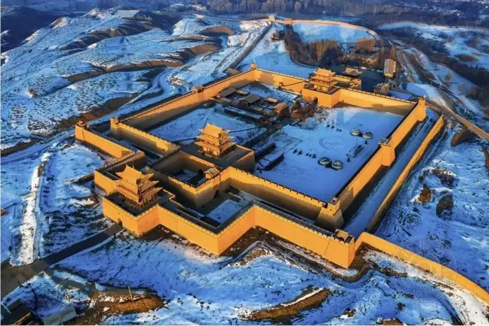
"Golden Mighty Pass"
January 3, 2019, Gansu
Under the setting sun, the First and Mightiest Pass under Heaven, Jiayuguan.
The Great Sea Road is a place of endless possibility in my heart. In reality it is desolate and lonely. It crosses the Nanhu Gobi of the Turpan-Hami Basin. It has a typical continental climate: dry, windy, and with little rain. Few people go there. Volcanic rocks cover the ground. There is a unique yardang landform, and countless rocks of strange shapes with wind-eroded textures. It draws me deeply. I used black and white to show my reverence and love for it.
Zhang Yue: I see that over the years you have joined dozens of shows, such as the National Excellent Photography Exhibition of the China Arts Festival, Beijing International Photography Week, Beijing Great Wall International Photography Week, Pingyao International Photography Festival, and the China-Japan-Korea Photography Exchange Exhibition. At such a high frequency, how much time a year do you give to photography?
Zhang Yu:Many of the shows and awards you mention were from earlier years. Before, my life was full of photography. Whether at work, at home, or in study and creation, I spent almost half the year shooting. But my shooting was mostly landscape. I also touched other types. We had a few close friends who all loved photography. Some worked in photography. Some ran restaurants. Some were civil servants. Photography brought us together. We spent nights talking, often about photographic knowledge and gossip. It was great fun. During that time I also tried documentary and portrait work. But I told myself to always act and behave with humility. As I said, deep accumulation before a gentle release.
Zhang Yue: I also see that you won an excellence award in the color open category of the Global Chinese Photography Awards and received the GCPA honor medal, a silver award in nature exploration at the Beautiful China Tourism Photography Contest, and second prize in the professional group of the National Drone Photography Contest. Do these awards carry mostly honor, or also prize money? Can contest prizes alone support your art?
Zhang Yu:Many of these awards had no prize money. Back then I felt that young people should take part more, and accumulate and learn more. I wanted to contact and learn from highly professional organizations. Now I slowly find that real masters live among ordinary people. I know many friends whose work has never won an award, but is no worse than many prize-winning images. As I said, much of the work online today, in student terms, is sugary and empty. It has no nourishment. It is like watching a popcorn movie: exciting but without feeling. I have never seen entering contests or winning awards as something glorious or a source of pride. My old idea was just to accumulate more. Now I still want to settle down and walk step by step. I will not rush for quick results. Prize money can never support your own art. I think this is the barrier for most young photographers. Yes, it is hard.
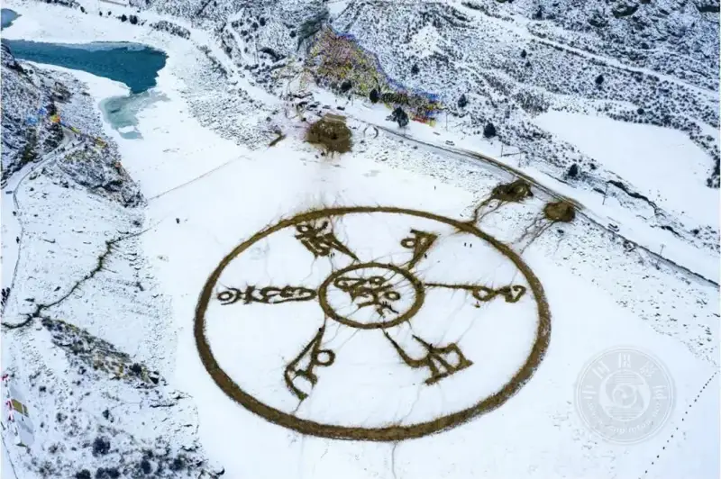
"Brand to the Sky"
February 2, 2019, Qinghai
Ten thousand people paint on the ice.
On the Tongtian River, people write blessings with sand and stones,
turning the river into an ice art corridor.
Zhang Yue: What types of work enter these contests, get into these shows, and win awards or enter collections?
Zhang Yu:Most were fine-art creation, such as landscape, scenery, documentary, and aerial photography. I think I should not rush to fix my category now. In any case, I cannot leave photography in this life, but I still want to try more. Compared with many older or excellent photographers, I still have a long way to go. Whether in photographic creation or in curating and marketing, I will keep learning. I will not stop here.
Zhang Yue: Are you a freelance photographer now? Do you make a living from photography?
Zhang Yu:I am not really a freelance photographer in the true sense now. I work at Sunac, and I handle media, photography, and video. If I do my own job well, I still have enough energy in life to create. Sometimes I need to balance things, because work is busy now, but I also need the support of my family.
Zhang Yue: You once said photography depends first on fate, second on love, and third on devotion. Can you talk about your own bond with photography, your love for it, and your devotion to it?
Zhang Yu:I have loved photography since childhood. It came from the influence of my father as I grew up. I walked step by step. I studied photography at university. Before I graduated, I began to study photography with Wang Jianjun. I think the bond with photography is wonderful. In my third year I was very troubled, because I had to find an internship. My mother wanted me to go back to Shandong and find a post. I knew that as a mother she did not want her son to live too far from home. I myself was also torn. At the time I had two internships in Chengdu. One was to work part-time as a wedding photographer in Yunnan. The other was to shoot Douyin videos at an internet company. I could not decide. Just as I wanted to return to Shandong, Teacher Wang called. He asked about my internship plans. I told him my thoughts. He asked if I wanted to work as his assistant. When I heard that, I was happier than if I had won the lottery. I agreed at once. This was one stroke of fate. But I never imagined how greatly the work and life of the years after would affect me. Teacher Wang came from the army. He is strict about both life and work. You could even call him demanding. Sometimes I was scolded over things I thought were small. Sometimes I felt wronged to tears. I wondered why I could not even do this small thing well. Did I really not know how? Or what was the reason? As time passed, I slowly reflected. Sometimes I blamed the teacher, because he had to control everything. Now I know that this strictness and demand from Teacher Wang helped me form good habits. This is great love. This is the feeling of a teacher. I feel it is like a father's love. One day as a teacher, a lifetime as a father. I will carry these years of experience and the teacher's teaching into my future life and work. Thank you again, teacher.
In those years my photographic skill and understanding grew a lot. The mountain is there. It does not walk to me, so I walk to it. Yes, I fell in love with the great rivers and mountains and the grand natural scenery of my country. It has a silent spirit that draws me deeply. Whether from sociology, geography, psychology, or Zen, everything finally returns to nature. Landscape photography has become part of contemporary art. In those years I met many top photographers, such as Chen Changfen, Zhu Xianmin, Yu Yuntian, Xie Mo, and Zhou Meisheng, and many excellent local teachers in Sichuan. I was lucky to go out shooting with them many times. I learned a lot, and my love for photography grew stronger. Another reason is that I personally love the city of Chengdu. I think Sichuan is the best place for photography to live. It is one of the most active and strongest regions for photography in China. From established photographers to new talents, Chengdu is also the hottest place to choose where to put down roots. When I was in Chengdu, I could hardly stay still any day. I thought about where to wander and shoot each morning. There was a surprise every time. For certain reasons I returned to Shandong to build my career. I keep my original heart. Because there is light in my heart, I will hold on to this devotion to photography.
Zhang Yue: I have seen your Great Sea Road uninhabited-area series. The landforms are amazing, the colors are bright, and the earth even holds strange patterns. This makes me very curious about your journey across the ancient Silk Road between Dunhuang, Hami, and Turpan, a mysterious and weathered route. Can you talk about how you made this series? Was the process very hard? Was there even some fear?
Zhang Yu:That was my first trip to Xinjiang. I never expected that I had reached the uninhabited areas you usually only see online. The Great Sea Road was the shortest ancient route between Dunhuang, Hami, and Turpan. It comes from a fragment of the Westzhou Map Classic. It opened and began to be used in the Han dynasty. After the Tang dynasty, official use slowly stopped. The Great Sea Road faded from view and became an old Silk Road route kept only in historical memory. From Dunhuang west through Hami to Turpan, the route is more than 400 kilometers. It is the most legendary part of the Silk Road. In the Great Sea Road you can see ancient castles, post stations, prehistoric dwelling sites, fossil mountains, and many rare landforms. Shooting this series taught me a real lesson. After wind and rain, a rainbow truly appears.
I remember we entered the Hami uninhabited area three times. The image that stays with me most was hard-won. At the time, Teacher Wang, the team, and I were using the new Sony camera. On the fourth day deep in the uninhabited area, our supplies were gone. The others had returned to the city hotel to rest. On the fifth day, the forecast said this area would have heavy rain and a tornado. I was both afraid and excited. In my whole life I had never faced extreme weather in a deserted uninhabited area. Inside, I actually wanted to back out. But Teacher Wang said firmly that we absolutely could not leave. This devotion brought us wonderful images. That night we set up the tent and held down its corners with more than ten large stones. The wind was already so strong that we could hardly keep our eyes open. The temperature dropped suddenly. Several times the tent nearly blew away. The wind raged and the rain poured. I do not know how I fell asleep that night. I even doubted whether I, so young, would get out alive. When the wind outside died down, I also heard wolves howl. Now I still doubt whether there were really wolves there. We survived the night. The next day, I remember it was a little after four when Teacher Wang's shout woke me. I had just unzipped the tent when I saw him carry the tripod and run straight up a slope of more than ten meters. I picked up my camera and followed, still half asleep. The scene before me cannot be put into words. What I saw was not the same place as the night before. I even felt the landform had changed. The sky showed maybe seven or eight colors to the naked eye. It formed a sharp contrast with the washed earth. It is still fresh in my memory.
Yes, we walked the ancient Silk Road three times. This fits the saying I mentioned: we rose earlier than the rooster, slept later than the dog, and were as tired as pigs. But each time we gained a lot. I think we were people who chased the sun, moon, and stars. Almost every day we kept on the move: travel, shoot, travel, shoot. We reached each planned spot after midnight. Then we organized gear and reviewed images. As the assistant, I sometimes had to drive. We had to leave at four or five the next day. But every day we were full of energy, as if pumped up. For me back then, having Teacher Wang lead the way was the greatest comfort and encouragement. There was always a silent force guiding us forward.
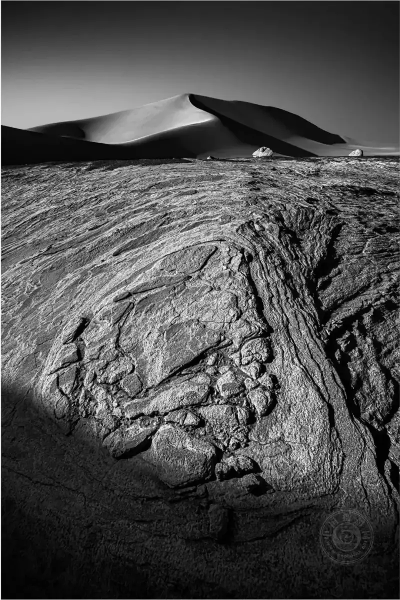
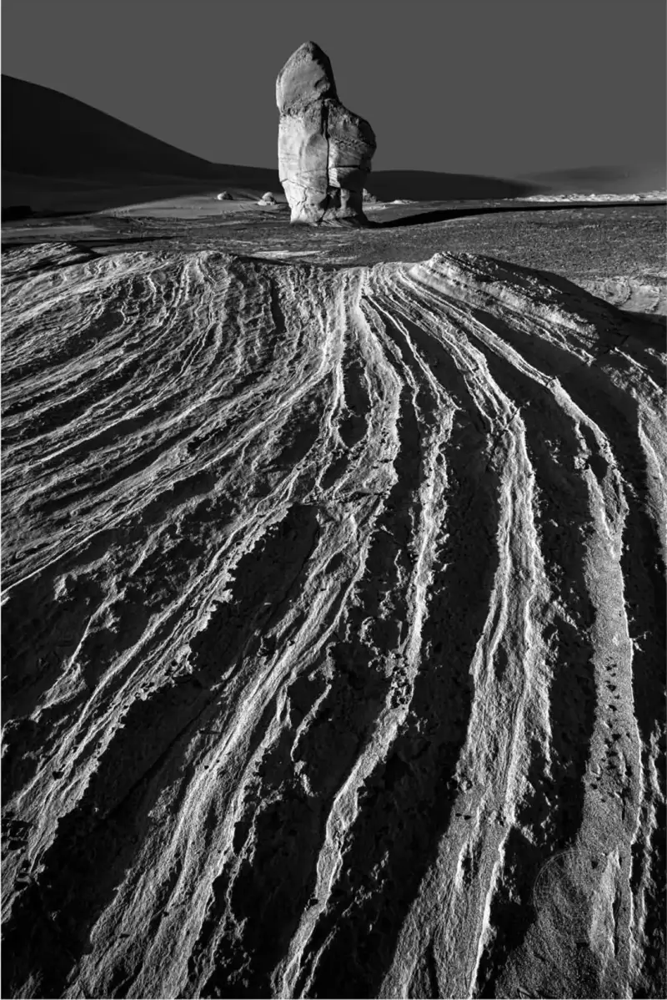
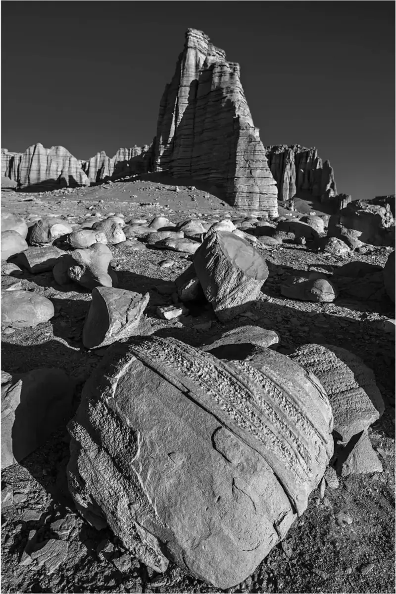
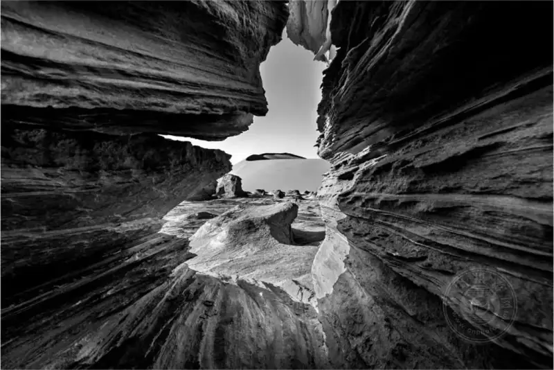
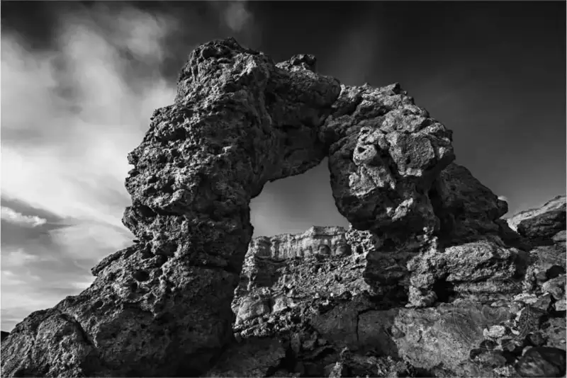
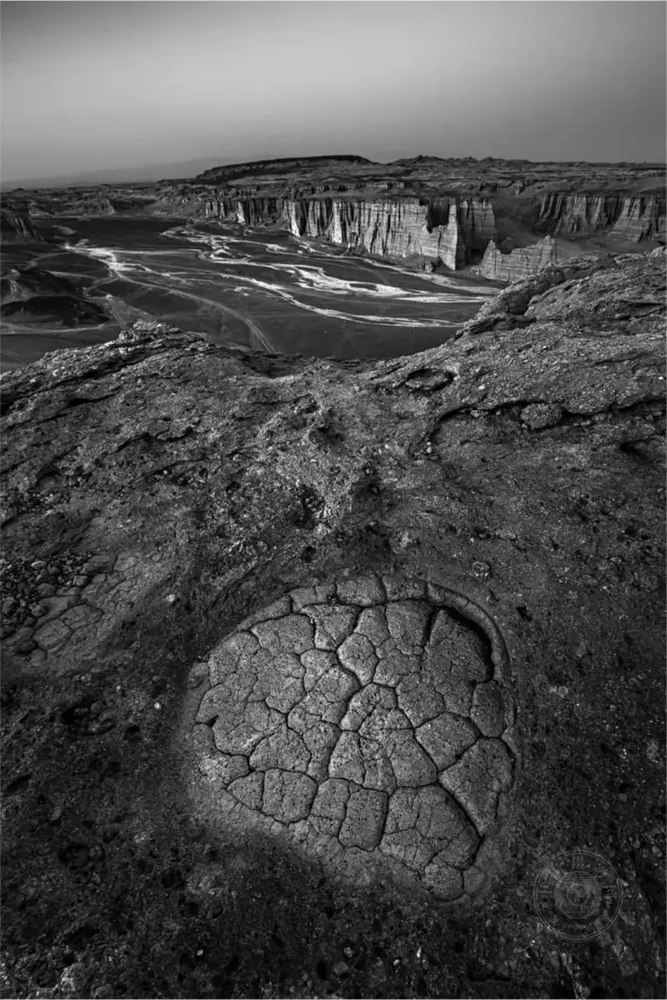
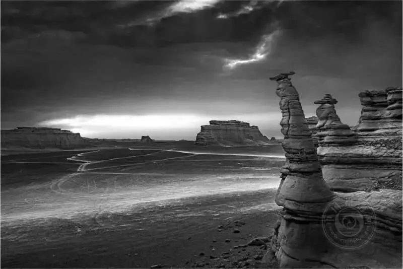
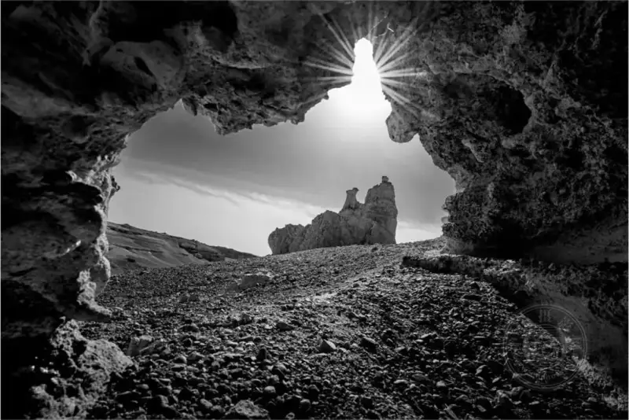
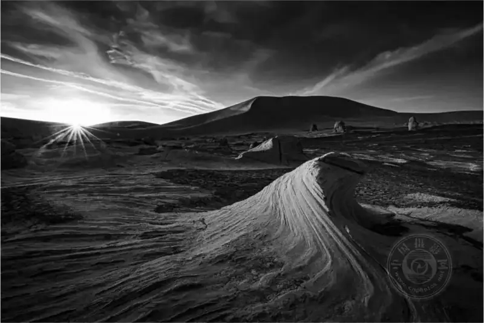
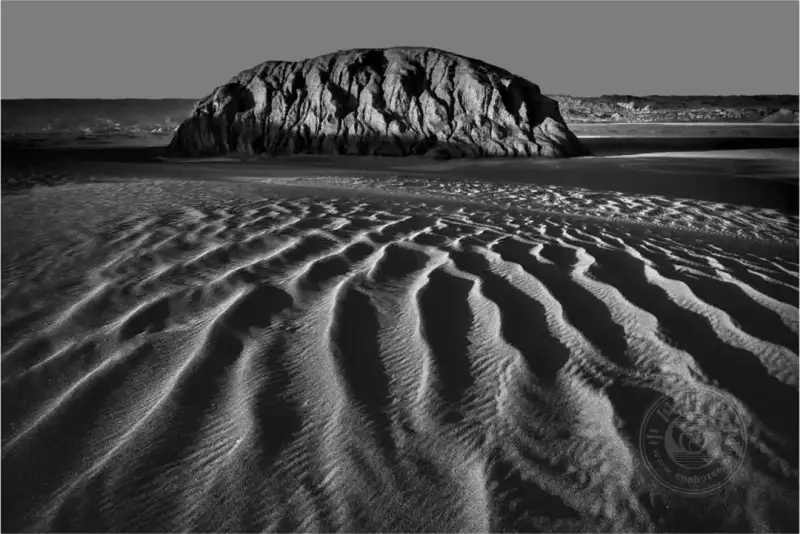
"Into the Great Sea Road" series works
Zhang Yue: What type or subject of photography are you working on now? Can you tell us about it?
Zhang Yu:Right now I still love landscape photography. I love the grand power of great rivers. But in Shandong, I think only Mount Tai, the chief of the five great mountains, can compare. The subject is too single. My current focus is aerial photography. I want to use a few years to record the character of our Qilu land through different aerial forms and methods.
Next is humanistic shooting. There are far too many images of earthly life online now. Every time I see them, they are like a shot of energy for people's dull lives. They are too common. My specific subject is still being chosen. But the broad direction is urban construction and development, rooted in the people at the bottom of society.
Zhang Yue: I am also a photography master's student. I want to know about the careers and development of photography graduates. I want to know how many people were in your class, and how many still keep creating photography after graduation.
Zhang Yu:Our class had many talented, thoughtful students. I remember the whole class had more than 30 people. Now very few still work in photography. I do not know the rest. Most of my classmates went back to their hometowns after graduation. Some found media-related jobs. The better ones opened their own photography studios. Most shoot weddings. In a small city, that probably earns money fastest. Others entered larger companies for image work. Some joined Xinhua News Agency, some DJI, and some Sony. I think such jobs are good. At least they are work they love. As for me, I actually still regret returning to Shandong. I said Sichuan is the most vigorous place for photography, and it is my second home. The whole city has a strong photography atmosphere and deep culture. It is also full of energy, has soul, and is inclusive. There are many like-minded friends who love photography, there are my teachers and benefactors, and there is the Chengdu hot pot I love. It is a pity. If I have the chance to go back and build my career, I would go back without hesitation.
Zhang Yue: In what year, and with what work, did you become a signed photographer of cnphotos.net?
Zhang Yu:This year, with the series That Mountain, That Scene.
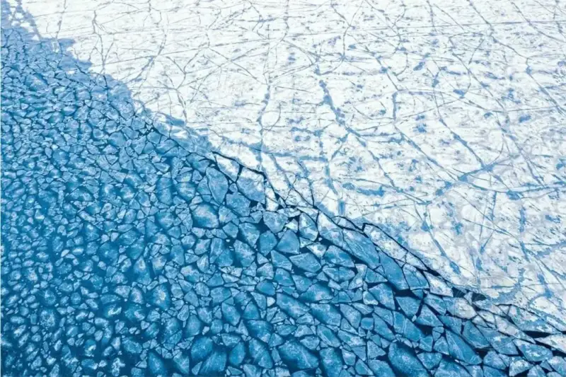
"Snow and Ice Fury"
April 1, 2019, Tibet
Deep winter in April, the ghost lake Lhanag-tso.
Zhang Yue: With what work did you win the 2022 cnphotos.net Top Ten Photographer title? Can you talk about how you made the entries, their content, and the process of entering?
Zhang Yu:I sensed the earth along the way, and set out through learning. Photography is a bond and an attitude. If the heart is close enough, good work will come. This series was shot over three years across western China, including Sichuan, Qinghai, Gansu, Xinjiang, and Tibet. Walking on the western land of my country filled me with energy all the time. It was so pure and so worth tracing. The mountains of western China stretch on and on, grand and powerful, with gorges a thousand ren deep. Three years passed in a flash. In those years I spent more than half of each year shooting outside. At first I only shot behind my teacher. But as time passed, I found I was just taking pictures. I understood nothing about the images I got, or about each region. The result was many works I could not even explain. That is a serious problem for a photographer. Slowly I consciously learned more about them. I came to understand the images I shot through time, space, and terrain. I felt it more and more. It was really a process of constant learning. Those years were also my fastest time of growth. Most of this series was aerial. When I selected the work, I deliberately grouped the aerial and ground shots of western China separately. In the end I chose 15 of 50 images as my entries for the Top Ten award. One reason is that I wanted to use more aerial views to look at our magnificent western China.
Zhang Yue: Will you make different choices or use new methods in your future photography?
Zhang Yu:I think I still need to keep learning. I do not say I must box myself into one fixed range of subjects. I still want to settle down, make a long-term plan and direction, and keep accumulating. Art and our appreciation of art both rest on the life we experience. Right now I still believe nature is the best art and the best way to live. It cultivates our feeling and gives rich color and beauty. I will try to change myself. In my understanding of images and my pursuit of art, I will always be on the road.
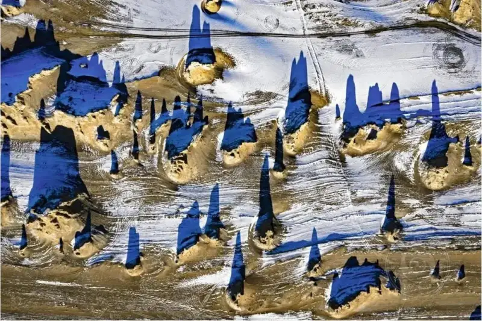
"Aerial View of Eboliang"
December 27, 2018, Qinghai
A once-in-50-years heavy snow at Eboliang.
Looking down from the air,
it looks like sharp swords set in the boundless land.
Zhang Yue: As an experienced photographer, does your father support your photography? Is he satisfied with what you have achieved in photographic art today? Beyond photography, what expectations and hopes does he have for your future?
Zhang Yu:My father strongly supports my photography. He also helps me a lot with work. In my current state I still want to go out and see more. I do not want to stay in one city. I think in future I will go out shooting with him more. That must be very happy. For what I have achieved so far, my father has never said he is so satisfied. Neither have I. I know I still have a long way to catch up in some areas. Including with my teacher, I think neither of them would use the word satisfied for what I have achieved. Strict and demanding. I think this is also the standard I should set for my own future. As for the last question, I still want to find time to sit down with my father, have a few drinks, and talk well.
Zhang Yue: Thank you for taking this interview.
Zhang Yue
Reporter for cnphotos.net.
Born in the 1990s, a Chinese woman based in Beijing.
She has published hundreds of thousands of words of arts criticism and political commentary.
She now studies for a master's degree in photography and digital media at the graduate school of the Chinese National Academy of Arts.
She has a special love for documentary photography.